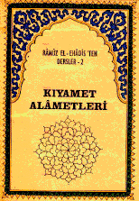

KIYAMET ALÂMETLERÝ
Râmûz el-Ehàdîs'ten Dersler
Hazýrlayanlar:
O. Çataklý, L. Doðan, C. Akþit
ÝÇÝNDEKÝLER:
Kýyametin Kopmasýndan Önce Zuhur Edecek Küçük Alâmetler
a. Çeþitli Alâmetler
b. Ticaretin Artmasý, Malýn Çoðalmasý
c. Çocuklarýn Durumu
d. Kur'an'ýn Merasimi ve Müslümanlýðýn Ýsminin Kalýþý
e. Ulemânýn Durumu
f. Umerânýn Durumu
g. Ýmaný Muhafazanýn ve Sünnete Uymanýn Güçleþmesi
h. Fitnelerin Zuhuru
i. Deccal'in Önüsýra Olacak Hadiseler
Kýyametin Büyük Alâmetleri
a. Kýyametin On Büyük Alâmeti
b. Melhameler ve Melhame-i Kübrâ (Büyük Harb)
c. Hz. Mehdi AS'ýn Zuhûru, Vasýflarý ve Müddeti
d. Kýyamete Kadar Hak Üzere Bir Grubun Bulunacaðý
e. Kostantýniyye'nin ve Roma'nýn fethi
f. Hadramut'tan Bir Ateþin Zuhuru
Deccal'in Çýkýþý, Vasýflarý ve Helâký
a. Ümmet Ýçinde Çýkacak Yalancýlar
b. Peygamberlerin Kavimlerini Deccal'e Karþý Ýkazlarý
c. Deccal'in Çýkacaðý Zaman
d. Deccal'in Çýkacaðý Yer ve Kendisine Tabi Olacak Kimseler
e. Deccal'in Vasýflarý ve Yapacaðý Bazý Ýþler
f. Deccal'in Varamayacaðý Yerler
g. Hz. Ýsâ AS'ýn Deccal'i Öldürmesi
h. Beklenen Yedi Þey Dolayýsýyla Amellere Acele Etmek Lüzumu
Hz. Ýsâ As'ýn Zuhuru
a. Hz. Ýsâ AS'ýn Tekrar Dünyaya Geleceði
b. Hz. Ýsâ AS'ýn Vasýflarý ve Devrindeki Durum
c. Hz. Ýsa AS'ýn Haçý Kýrýp, Cizyeyi Kaldýrmasý ve Malýn Artmasý
d.Ýmanýn Medine'de Toplanmasý
Ye'cüc ve Me'cüc'ün Çýkýþý, Vasýflarý ve Helâký
a. Ye'cüc-Me'cüc'ün, Adem AS'ýn sulbünden olduðu
b. Hz. Hýzýr ve Ýlyas AS'ýn Her Gece Sed Üzerinde Buluþmasý
c. Kendileri ile Harb Yapýlacak Bazý Kavimler
d. Ye'cüc ve Me'cüc'ün Vasýflarý
e. Ye'cüc ve Me'cüc Hadisesinde Toplanma Merkezinin Tur-u Sînâ Olacaðý
f. Ye'cüc ve Me'cüc'den Sonra da Hac ve Umre Yapýlacaðý
Dabbetül-Arz'ýn Zuhuru ve Güneþin Batýdan Doðmasý
a. Dabbetül-Arz'ýn Yapacaðý Þeyler
b. Güneþin Batýdan Doðmasý
c. Güneþin Batýdan Doðuþu ile Tevbe Kapýsýnýn Kapanacaðý
Güneþin Batýdan Doðuþundan Kýyamete Kadar Olacak Haller
a. Fitnelerin Artmasý
b. Ýlk Helâk Olacak Kavimler
c. Bir Takým Gençlerin ve Ýnsanlarýn Durumu
d. Müslümanlarýn Durumu ve Þeytanlarýn Çýkýþý
e. Kâbe'nin Yýkýlmasý ve Ýbadetin Kalmamasý
f. Bazý Harikulâde Hadiselerin Zuhuru
g. Zamanda Yakýnlýk ve Herc ü Merc'in Artmasý
h. Yere Batma, Taþ Yaðmasý ve Sûret Deðiþtirme Hadiseleri
i. Yaðmurlarda Bereket Kalmamasý ve Yýldýrýmlarýn Artmasý
j. Kur'an'ýn Silinmesi ve Kalkmasý
k. Salihlerin Ölümü ve Kýyametin Kopmasý
Peygamber SAS Efendimiz'in Tavsiyeleri
a. Ma'rufla Emir, Münkerden Nehy Etmek
b. Amelde Müsaraat (Acele) Etmek
c. Zalim Umera ile Birlikte Olmamak
d. Þam'da Toplanmayý Tavsiye
e. Mücahidlerin Fazîleti
f. Aczin Fücûra Tercih Edileceði Zaman
g. Fitne ve Belâlardan Kurtulma Çareleri
h. Gam, Keder ve Musibet Ýsabetinde Söylenecek Dualar